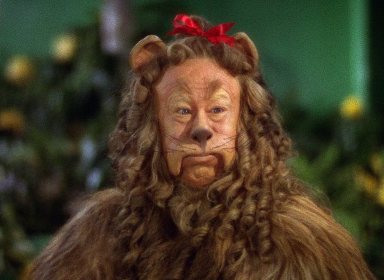
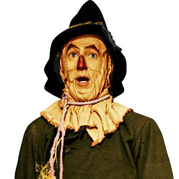
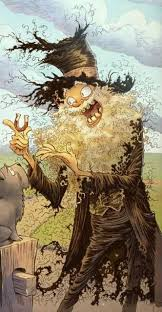
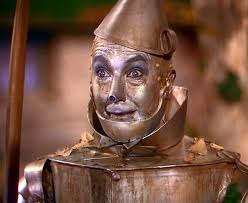
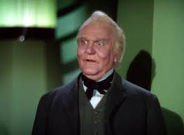
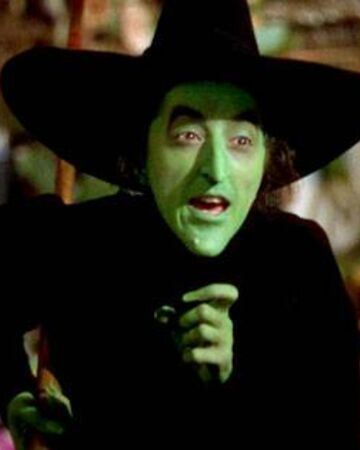
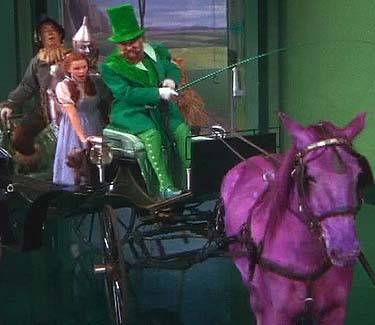

The Wizard of Oz is a 1939 American musical fantasy film
When a tornado rips through Kansas, Dorothy (Judy Garland) and her dog, Toto, are whisked away in their house to the magical land of Oz. They follow the Yellow Brick Road toward the Emerald City to meet the Wizard, and en route they meet a Scarecrow (Ray Bolger) that needs a brain, a Tin Man (Jack Haley) missing a heart, and a Cowardly Lion (Bert Lahr) who wants courage. The wizard asks the group to bring him the broom of the Wicked Witch of the West (Margaret Hamilton) to earn his help.
Friends of Oz
Dorothy

Cowardly Lion

Scarecrow

Shaggy Man

Tin Man

Wizard

Wicked Witch

Horse

Evil Flying Monkey